💢家有猫鼠💢


 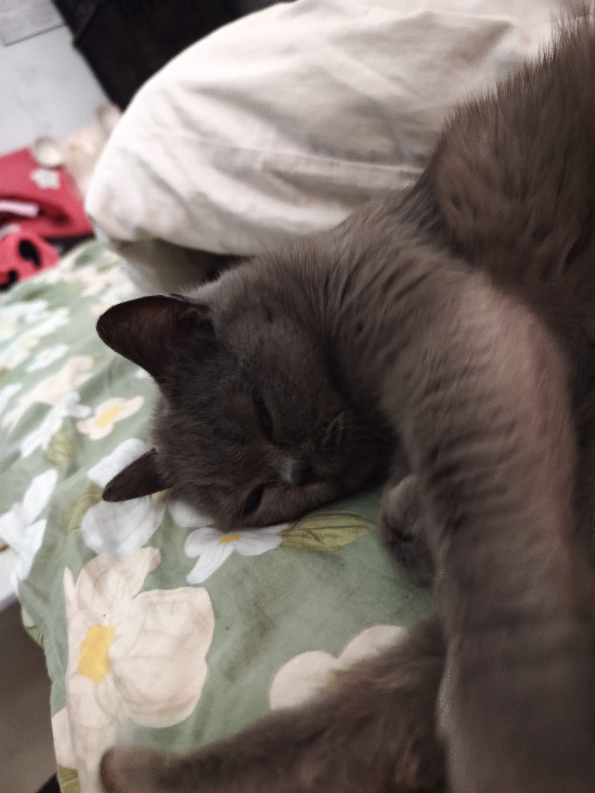
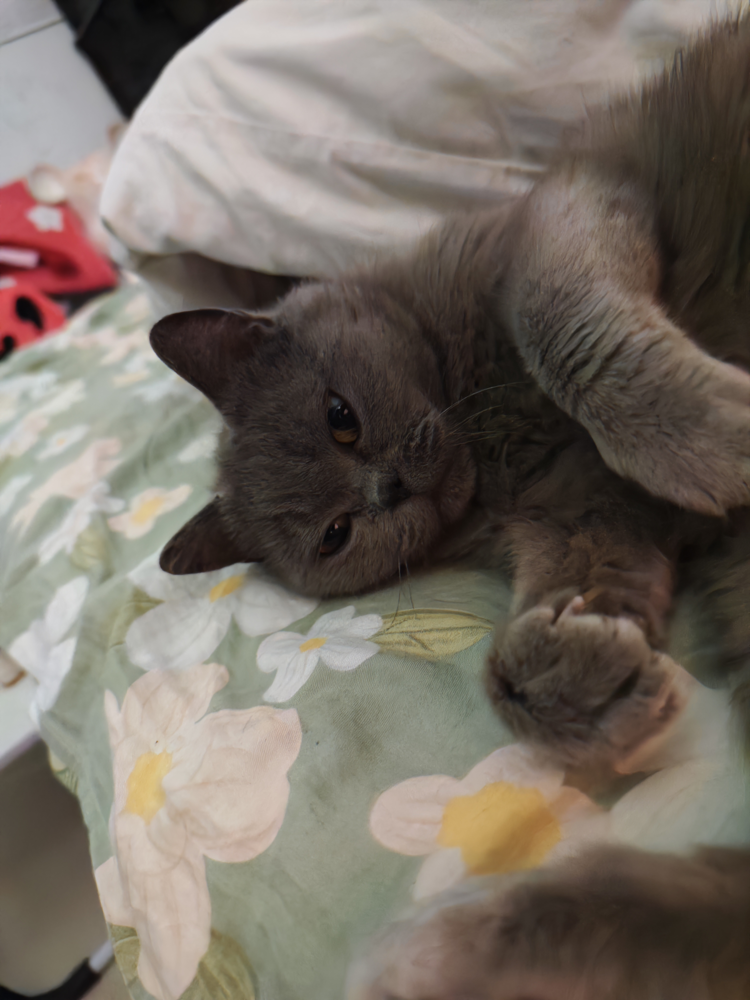
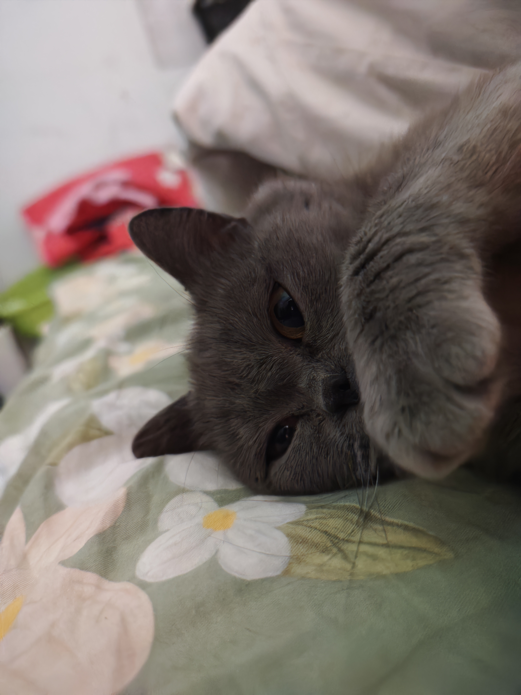
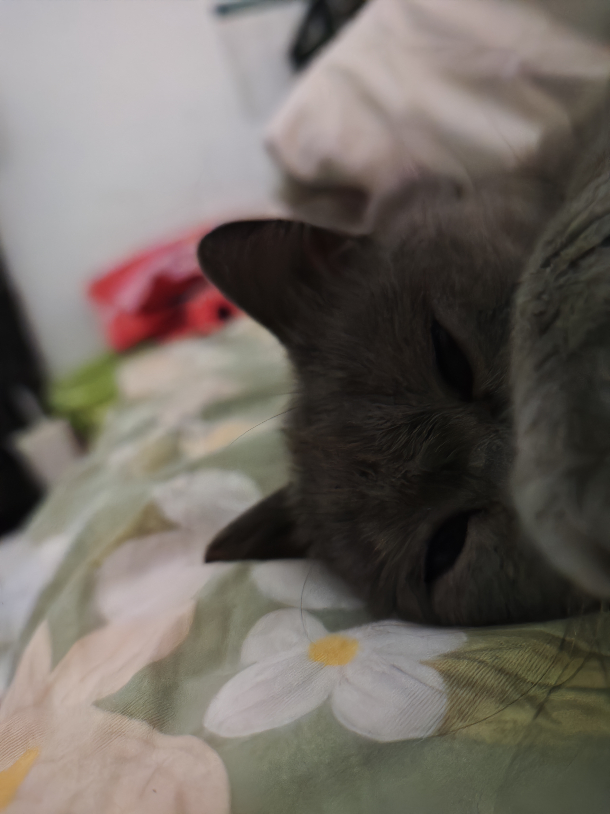
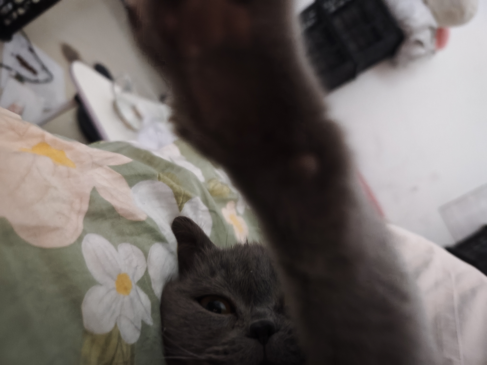
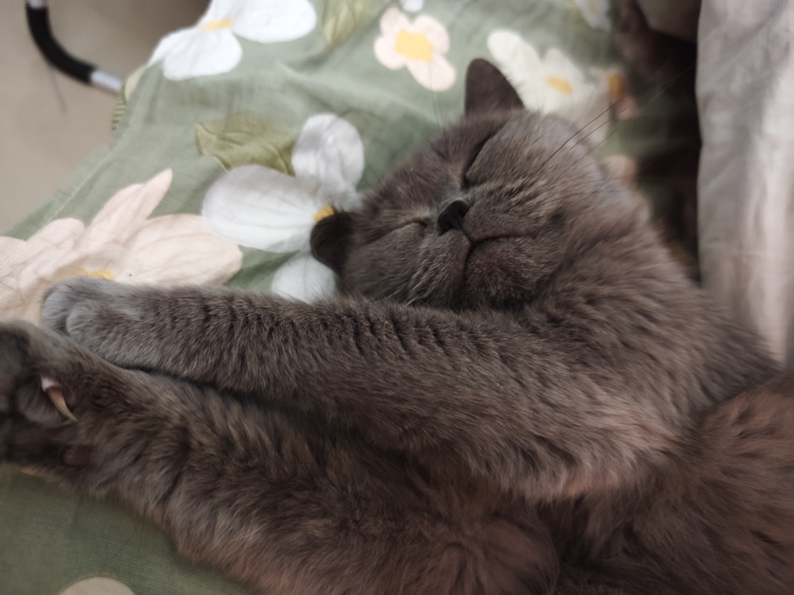
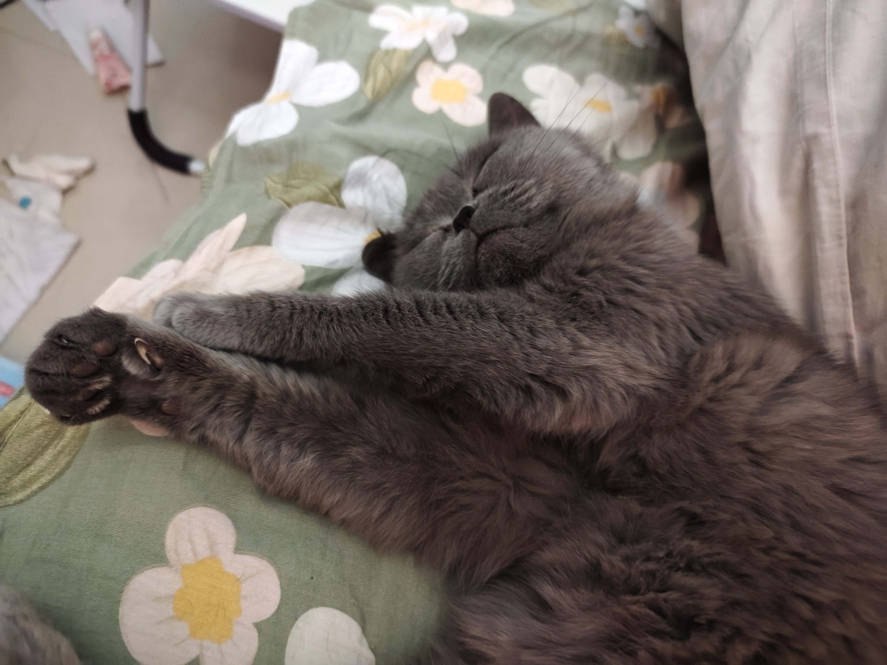
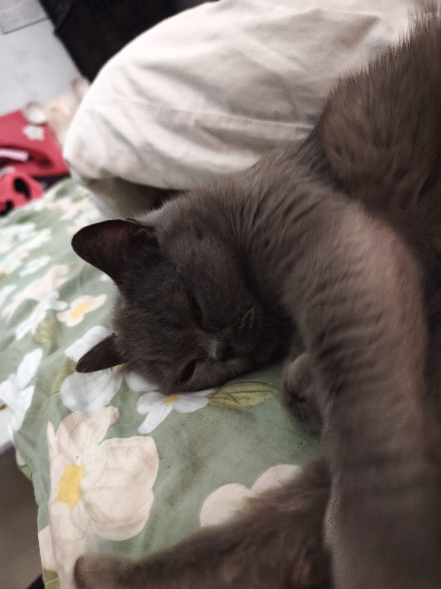
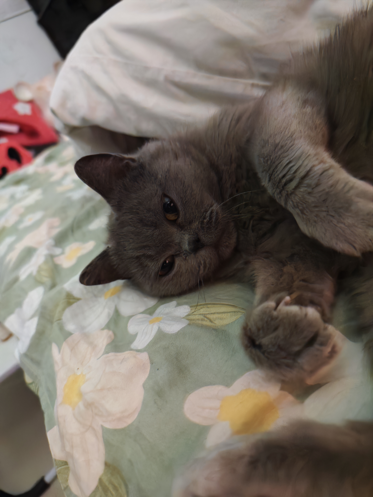
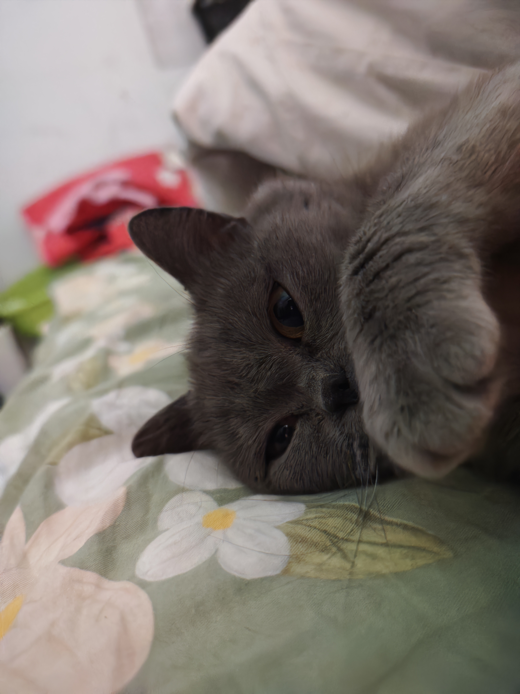
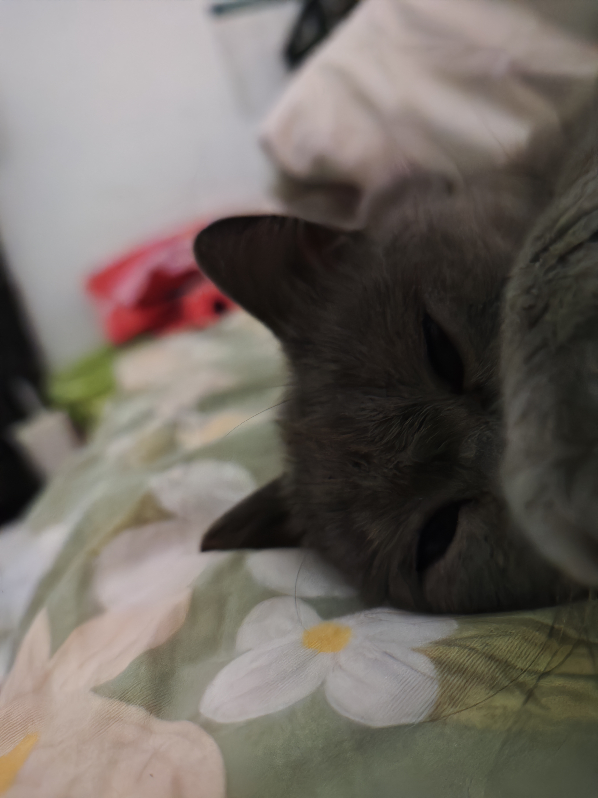
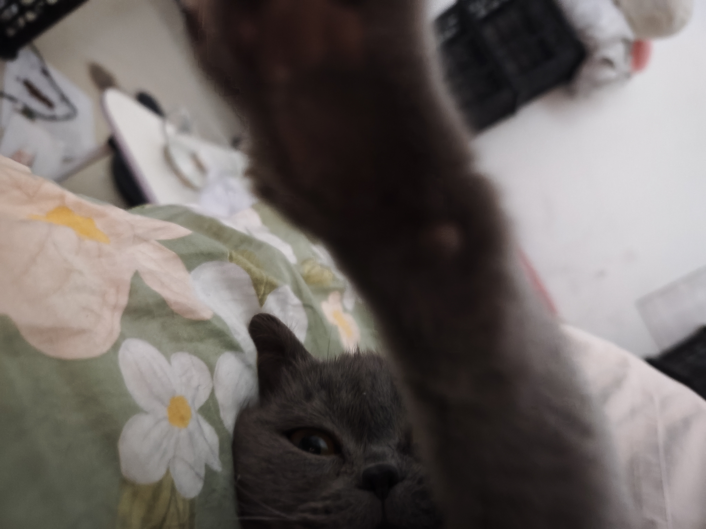
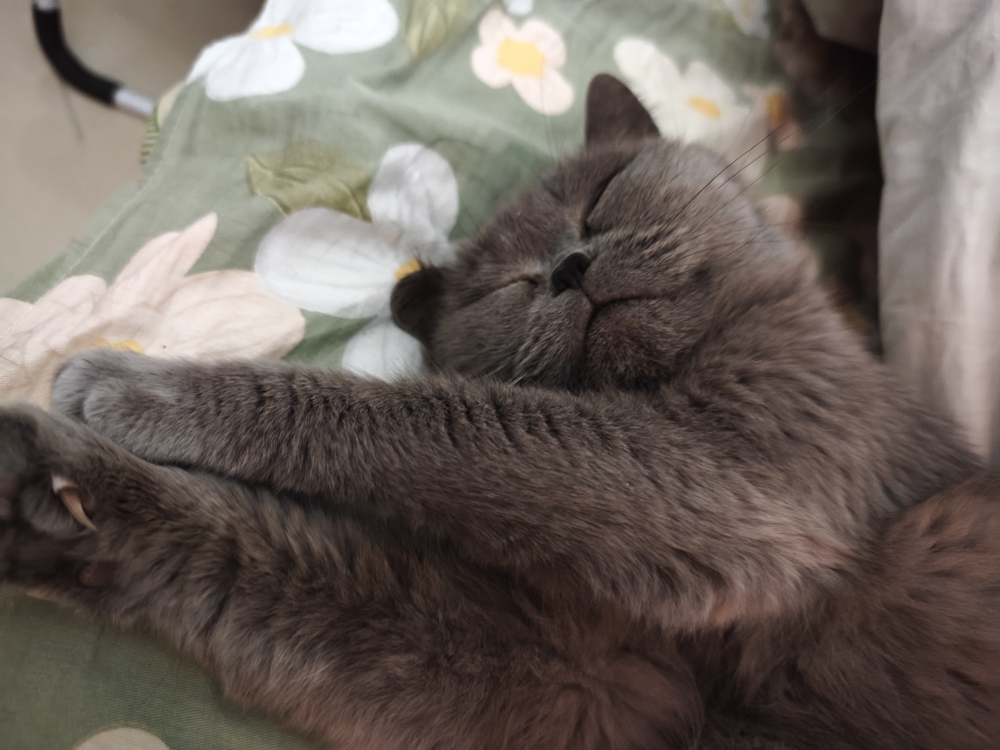
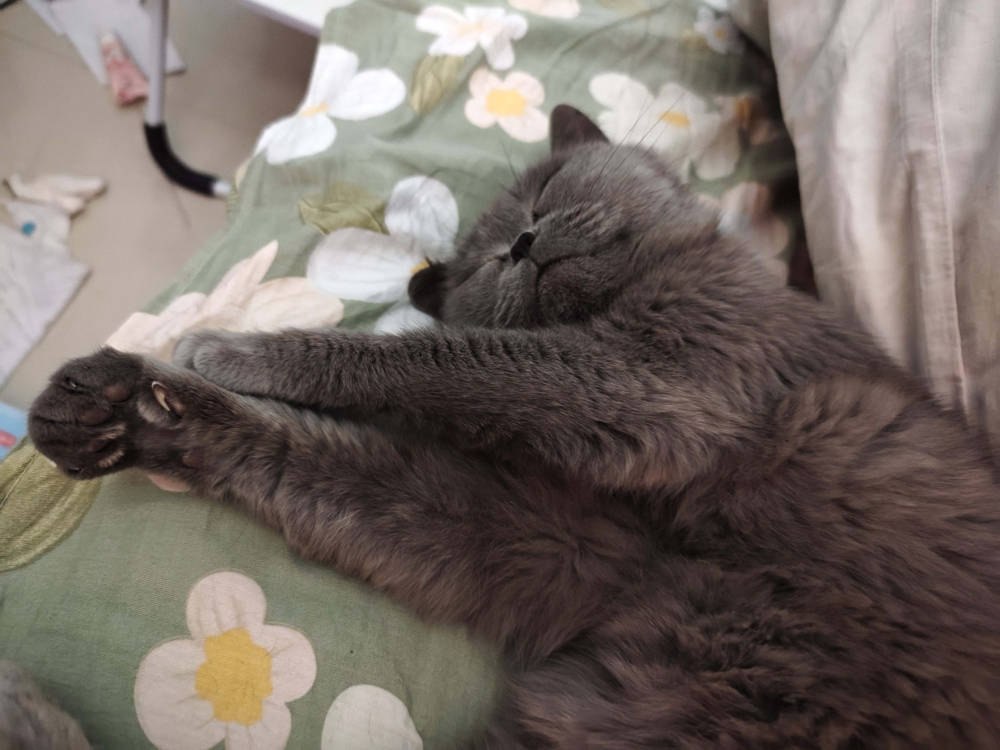
🐾 家里有了宠物，生活多了一份陪伴 🐾
🐾 清晨，经常能被猫咪的呼噜声唤醒 🐾
🐾 傍晚，鼠鼠的活泼跳跃总能带来一家人的欢声笑语 🐾
🐾 它们是家中的小精灵，点亮了每个角落 🐾
🐾 无论是开心还是难过，它们总是默默陪伴 🐾
🐾 一群猫，一群鼠，竟然能和平共处 🐾
🐾 它们的互动，治愈了我们生活的疲惫 🐾
🐾 每一次抚摸，都是心灵的安慰 🐾
🐾 每一次对视，都是无声的交流 🐾
🐾 它们教会我们珍惜当下，享受简单的幸福 🐾
🐾 家里有了宠物，生活从此不再孤单 🐾
🐾 它们是家人，是朋友，也是心灵的港湾 🐾
🐾 它们的陪伴，给我的生活填充了更多的爱与温暖 🐾